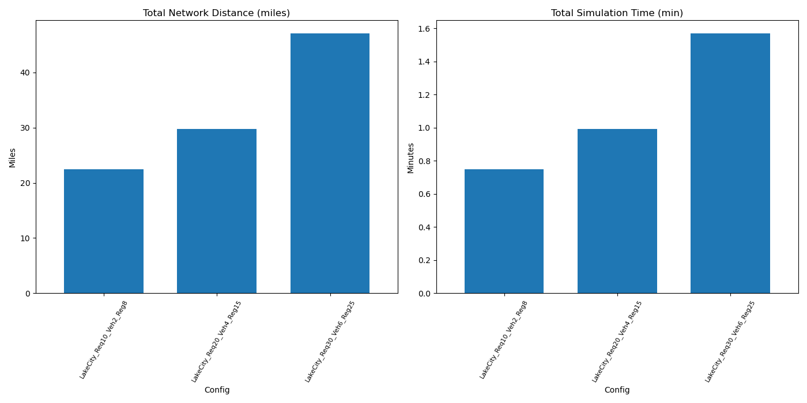

Below are the aggregated metrics from our three case studies, each representing a distinct scenario in terms of number of requests, vehicles, and region size, using real road network nodes and distances.
| Config | Place | NumRequests | NumVehicles | RegionSizeDeg | distance_miles | sim_time_min |
|---|---|---|---|---|---|---|
| LakeCity_Req10_Veh2_Reg8 | Lake City, Florida, USA | 10 | 2 | 0.08 | 22.429 | 0.747883 |
| LakeCity_Req20_Veh4_Reg15 | Lake City, Florida, USA | 20 | 4 | 0.15 | 29.756 | 0.992217 |
| LakeCity_Req30_Veh6_Reg25 | Lake City, Florida, USA | 30 | 6 | 0.25 | 47.099 | 1.570383 |
This bar chart compares total network distance (left) and simulation time (right) across the scenarios. We see how the system scales with the number of requests and region size using road network calculations.
